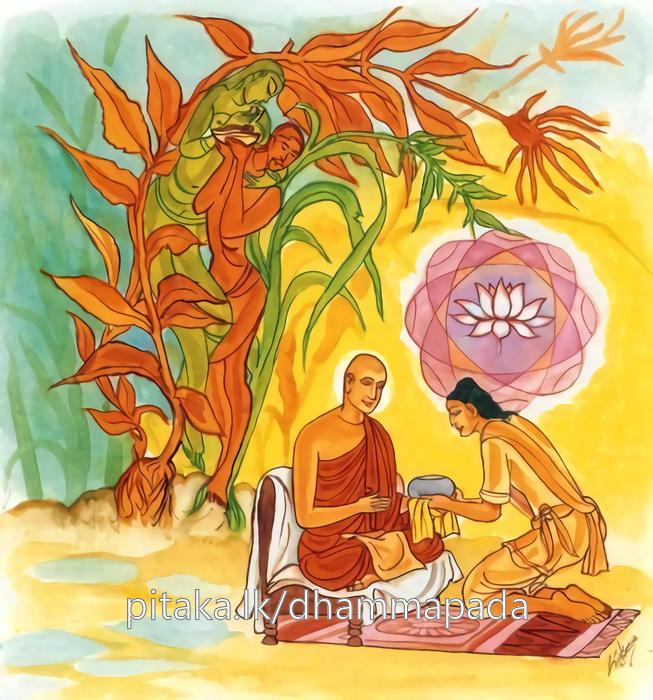
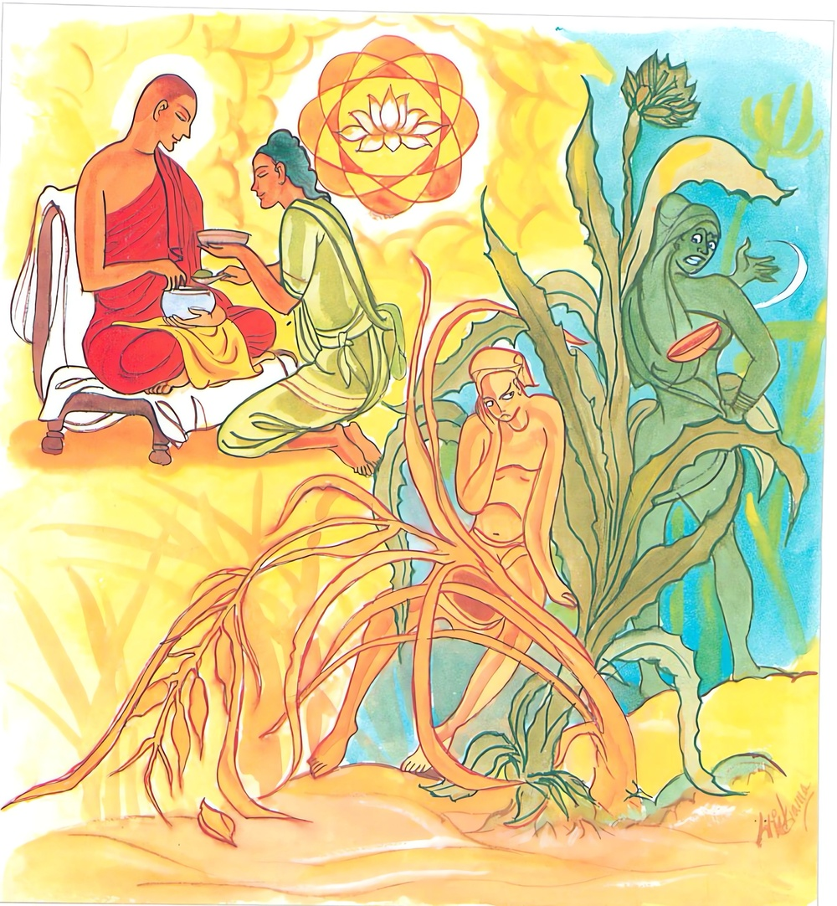
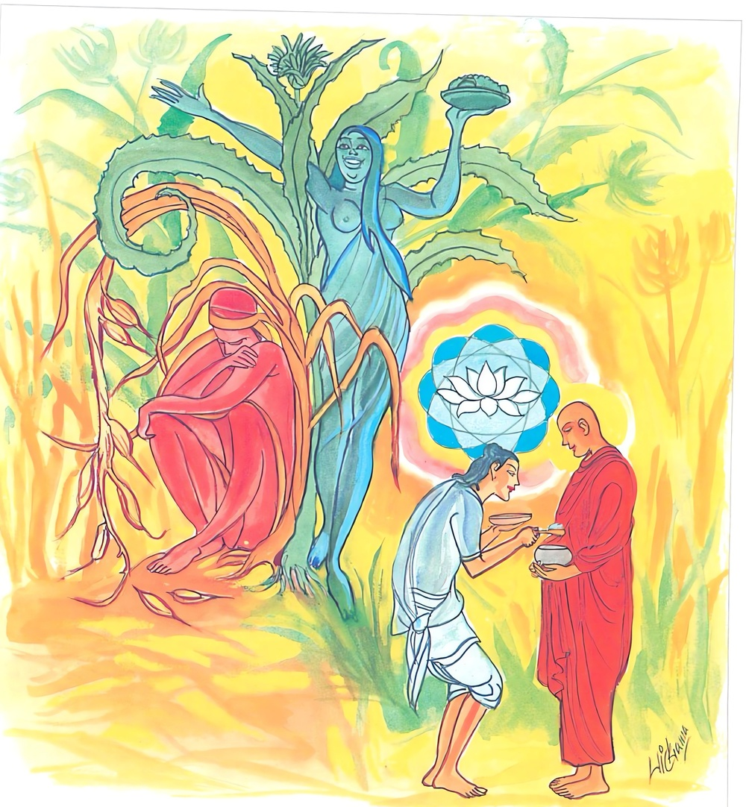
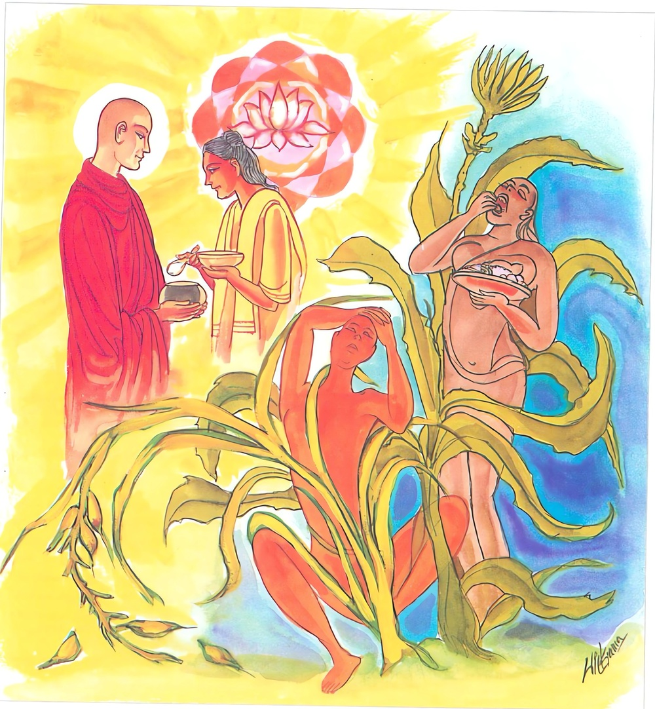

24-12 අඞ්කුර දෙවියන් පිළිබඳ කථා පුවත
මෙම කතාව සද්ධර්ම සාගරයෙන් ද කියවන්න.
තිණදොසානි ඛෙත්තානි රාගදොසා අයං පජා
තස්මා හි වීතරාගෙසු දින්නං හොති මහප්ඵලං.
කෙත්හු (මාරතු කුඩුමැටි ආදි) තණ දොස් ඇත්තාහු ය. එසේ ම මේ සත්ත්වප්රජාව ද රාගය දොස් කොට ඇත්තේ ය. එ හෙයින් පහ වූ රාගය ඇතියන් කෙරෙහි (රහතුන් කෙරෙහි) දුන් දන මහත් පල වේ.

තිණදොසානි ඛෙත්තානි දොසදොසා අයං පජා
තස්මා හි වීතදොසෙසු දින්නං හොති මහප්ඵලං.
කෙත්හු තණ දොස් ඇත්තෝ ය. මේ සත් කැල ද ද්වේෂ සංඞ්ඛාත දෝෂය ඇත්තාහ. එ හෙයින් පහ වූ ද්වේෂය ඇතියන් (ක්ෂීණාස්රවයන්) කෙරෙහි දුන් දන මහත්පල වේ.

තිණදොසානි ඛෙත්තානි මොහදොසා අයං පජා
තස්මා හි වීතමොහෙසු දින්නං හොති මහප්ඵලං.
ක්ෂේත්රයෝ (සාමාකාදී) තෘණයන් දොස් කොට ඇත්තෝ වෙත්. (ශෂ්යඵල සමෘද්ධ නො වෙයි). මේ සත්ත්වප්රජාව (තත්ත්වප්රතිච්ඡාදක) මෝහය දොස් කොට ඇත්තේ ය. එ හෙයින් මෝහය දුරැලූ අශෛක්ෂවරයන්හට දෙන ලද්ද මහත්ඵල වෙයි.

තිණදොසානි ඛෙත්තානි ඉච්ඡාදොසා අයං පජා.
තස්මා හි විගතිච්ඡෙසු දින්නං හොති මහප්ඵලං.
ක්ෂේත්රයෝ (සාමාකාදී) තෘණයන් දොස් කොට ඇත්තෝ වෙත්. (ශෂ්යඵල සමෘද්ධ නො වෙයි.) මේ සත්ත්වප්රජාව ඉච්ඡාව දෝෂ කොට ඇත්තේ ය. එහෙයින් තෘෂ්ණාව දුරැලූ අශෛක්ෂවරයන්හට දෙන ලද්ද මහත්ඵල වෙයි.

"තිණදෝසානි” යන මේ ධර්මදේශනය ශාස්තෲන් වහන්සේ පාණ්ඩුකම්බල ශෛලාසනයේ වැඩසිටිය දී අංකුර දෙවියා නිමිති කරගෙන දේශනා කළහ.
කථා පුවත "යෙ ඣාන පසුතාධීරා” යන ගාථාව විස්තරයේ සඳහන්වෙයි. එහිදී ඉන්ද්රක දේව පුත් නිමිති කරගෙන පැවසුහ. ඔහු වනාහි ඇතුළු ගමට පිඩුපිණිස වැඩමකළ අනුරුද්ධ තෙරුන්ට හැන්දක් පමණ පිණ්ඩපාතය දුන්නේය. ඔහුගේ මේ පින නිසා අංකුර දසදහසක් අවුරුදු දොළොස් යොදුනක් උදුන් පෙළ බැඳ දුන් දානයට වඩා මහත්පල මහානිසංශ විය. එනිසා මෙසේ පැවසුහ. මේ නිසා අංකුරගේ දානය මෙන් සිතා විමසා දන්දිය යුතුය එය යහපත් කෙතක වැපිරූ බිජයක් සේ මහත්ඵල මහානිසංශ වේ. ඔබ එලෙස නොකළේය. එනිසා ඔබේ දානය මහත්ඵල නොවීය. මෙය විස්තර කරමින්.
"විචෙය දානං දාතබ්බං - යත්ථ දින්නං මහප්ඵලං” යම් පුද්ගලයෙකු විෂයෙහි දන් දීමෙහි දී දෙන ලද දානය මහත්ඵල මහානිසංශ වේදැයි සොයා බලා දානය දිය යුතුය. නුවණින් සොයා දන් දෙන දායකයෝ වර්ගයට පැමිණෙත්. යම් කෙනෙකුට දන් දීමෙන් මහත්ඵල මහානිසංශ වේද එනිසා බුදුන් විසින් පවසන ලද දානය විමසා දිය යුතුය මෙලොව දක්ෂිණාභ උතුමන්ට දන් දීමෙන් මහත්පල මහානිසංශ වේ. එය යහපත් කුඹුරක වපුරන ලද බීජ මෙනි.
තවදුරටත් ධර්ම දේශනා කරමින් මේ ගාථා පැවසුහ.
- රාග දොෂයෙන් යුත් මේ ප්රජාව තෘණ දෝෂයෙන් යුතු කෙතක් වැනි වේ. එනිසා වීතරාගී උතුමන්ට දුන් දානය මහත්ඵල මහානිසංශ වේ.
- ද්වේශයෙන් යුතු මේ ප්රජාව තෘණ වැවුන කෙතක් වැන්න. එනිසා ද්වේශයෙන් තොර උතුමන්ට දීම මහත්ඵල වේ.
- මෝහයෙන් යුත් මේ ප්රජාව තෘණ වැවුන කෙතක් වැන්න, මෝහය නැති උතුමන්ට දීම මහත්ඵල වේ.
- ඉච්ඡාදොෂයෙන් යුත් මේ ප්රජාව තෘණ වැඩුන කෙතක් බඳුය. ඉච්ඡාදෝෂයෙන් තොර උතුමන්ට දීම මහත් ඵල වේ.
බොරු පන්. ඉලුක් තණ - පැළ වූ පුරන් කුඹුරක
වැපුරුව ද බිත්තර වී - අස්වැන්න නොලැබේමයි.
ත පෝ ගුණ සිල් ගුණ - නැත්තන්ට දන් දීම ද
පුරන් වූ කුඹුරක - වැපුරුවා මෙන් වේ.
එහි තිණදෝසානි තෘණ දෝෂ නම් ඉලුක් ආදී තෘණ ඇතිවී පුරන් වූ කෙත්වල වැපිරීමෙන් අස්වැන්න ගත නොහැකිය. මෙලෙසට සත්ත්වයන්ගේ සිත් තුළ රාගය ඉපදීමෙන් දුෂණය වේ. එනිසා - රාග - දොස - මෝහයෙන් යුතු පුද්ගලයන්ට දීමෙන් මහත්ඵල ඇති නොවේ. එවැනි දෝෂ රහිත උතුමන්ට දීමෙන් මහත්ඵල ඇතිවේ. දේශනාව අවසානයේ අංකුර ද, ඉන්ද්රකද සෝවාන් ඵලයේ පිහිටියහ. රැස්ව සිටි හැම දෙනට දේශනය සාර්ථක විය.
විසි හතරවැනි
තණ්හා වග්ග වර්ණය නිමියේය.